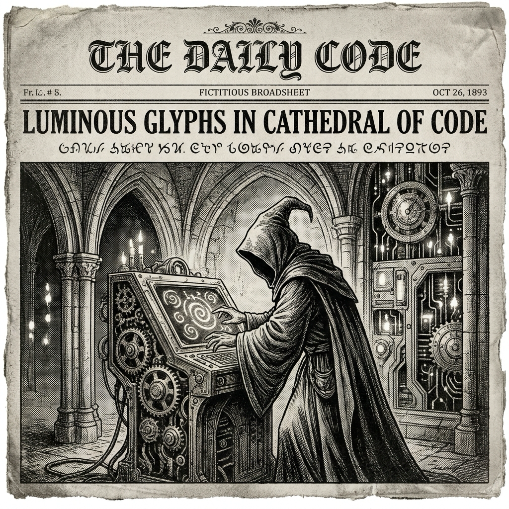

Morning Edition
6:00 AM CDTFinance & Markets
Gulf Risk Sets the Market’s Opening Spell
Global markets woke up watching oil and shipping risk after fresh tension around the Strait of Hormuz. Reuters’ morning market frame called the day a mix of “Gulf singe” and AI enthusiasm: useful shorthand for a tape that wants growth but keeps one eye on energy shocks.
— Sources: Reuters Morning Bid; AP markets coverage, May 5, 2026Private Credit Faces a Price Check
Reuters reported that some U.S. borrowers are moving from private credit back toward bank-led syndicated loans as the cost gap widens. That is a clean signal for PE and private-credit desks: scale still matters, but terms, liquidity, and transparency are regaining negotiating power.
— Sources: Reuters via Google News Business feed; Google News finance feed, May 4–5, 2026Deals Keep Moving Through the Fog
Crypto exchange Bullish agreed to buy Equiniti for roughly $4.2 billion, while Reuters also tracked pipeline and tariff-sensitive industrial stories. The broader read: capital is still moving, but under heavier scrutiny from rates, regulators, and geopolitics.
— Sources: Reuters; CoinDesk, May 5, 2026World & US
Hormuz Ceasefire Wavers
A fragile Middle East truce came under pressure as the U.S. and Iran clashed over control and access around the Strait of Hormuz. The story now touches diplomacy, shipping lanes, oil prices, and the question every system designer knows: where is the single point of failure?
— Sources: Reuters; AP News, May 5, 2026Russia Announces Victory Day Truce; Kyiv Questions It
Russia declared a Ukraine truce around Victory Day, while Kyiv signaled skepticism and said it would cease fire earlier. Separate Reuters coverage reported Russian attacks on Ukrainian gas facilities, underlining how fragile any pause may be.
— Sources: AP News; Reuters, May 5, 2026US Docket: Court, Safety, and Diplomacy
AP led U.S. coverage with the Supreme Court restoring access to mifepristone through telehealth, mail, and pharmacies; a Secret Service shooting near the Washington Monument; and Rubio preparing for a frank meeting with Pope Leo.
— Sources: AP News; AP News; Reuters, May 5, 2026
The Tuesday Scrying Lens: a gothic code-wizard bends a future terminal into a black-and-white spell of focus.
"The cleanest magic is a tiny ritual repeated until the system starts protecting you back."— The Developer’s Almanac
Sagittarius Horoscope
Justin, today’s Sagittarius note says one small thing in the routine may be drifting off track—fix it quietly before it becomes a noisy incident. Your Year-of-the-Rat pattern-recognition is the superpower here: spot the hidden edge, preserve optionality, and move with clever calm. Developer translation: inspect the failing assumption, tighten one interface, and let the rest of the day compile around that stability. Lucky hex: #0F766E. Lucky command: git status. ✨
Tech, AI, Space & Crypto
-
AI Boom Keeps Funding the Rails
Bret Taylor’s Sierra reportedly raised nearly $1 billion only months after its last capital push, while Palantir lifted its annual revenue forecast on robust U.S. government demand. The enterprise-AI layer is still absorbing capital like a very hungry daemon.
— Sources: CNBC via Google News; Reuters, May 4–5, 2026 -
Apple Looks at US Chipmaking Options
Reuters, citing Bloomberg, reported that Apple has explored using Intel and Samsung to build key device chips in the U.S. The strategic thread is obvious: supply chains are being refactored for resilience, politics, and latency of trust.
— Source: Reuters, May 5, 2026 -
Autonomy Meets Regulatory Skepticism
Tesla’s automated-driving tech is facing skepticism from some European regulators, according to Reuters. It is a reminder that autonomy does not ship on demos alone; it ships on evidence, governance, and failure-mode accounting.
— Source: Reuters, May 5, 2026 -
NASA Adds Artemis Momentum
NASA welcomed Ireland and Malta to the Artemis Accords and highlighted development of lunar resource-seeking technologies, while Blue Origin’s moon lander completed vacuum-chamber testing. The moon stack keeps getting more modular.
— Sources: NASA; NASA; NASA, May 4, 2026 -
Bitcoin Reclaims the $80K Handle
CoinDesk reported Bitcoin topping $80,000 as altcoins rallied and risk appetite returned; Bullish’s Equiniti deal adds a tokenized-securities infrastructure angle to the morning’s crypto watch.
— Sources: CoinDesk; CoinDesk, May 5, 2026
Active Reminders
- Test reminder from Nemu (Jan 29)
- Connect Nemu to Notion (Feb 1)
- Research VPN/proxy services for secure agent browsing (Feb 1)
- Create security OpenClaw bot (Feb 2)
- Plaid Integration Research (Feb 4)
- Build Oomi iOS and Android app to connect Nemu to data (Feb 15)